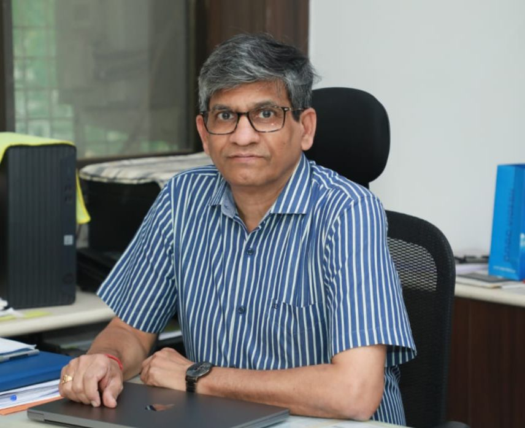
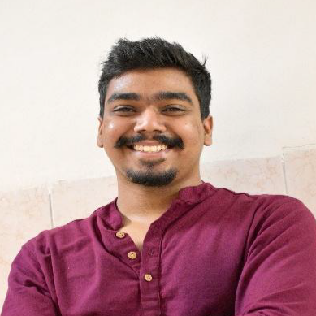
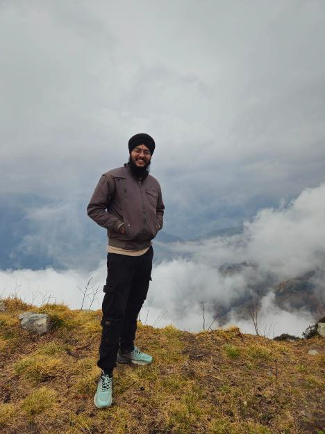
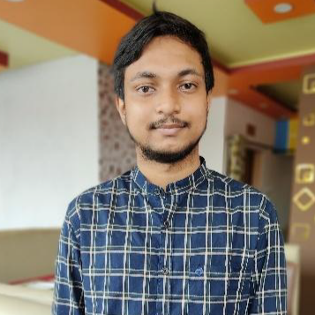
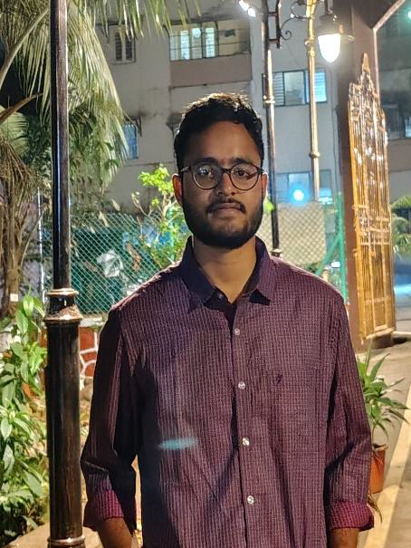

About the Chapter
The Society of Petroleum Geophysicists, India was born on August 15, 1992, when about 30 Geophysicists met and resolved to form an association, for improved interaction and technical exchange. The Society was registered with the Registrar of Societies as a non-profit organization on January 4, 1993.
SPG is presently affiliated to international societies “Society of Exploration Geophysicists (SEG)” USA, European Association of Geoscientists & Engineers (EAGE) – Netherlands & Australian Society of Exploration Geophysicists (ASEG), Australia. The SPG publishes half yearly technical journal GEOHORIZONS, which contains technical papers, case studies and activities of the various regional and student chapters.
At present the society has ten regional chapters, including one overseas in North America, 16 student chapters, all in India and a total membership of around 2600 which includes Life, Annual & Student memberships.
Council Members

Prof. Munukutla Radhakrishna
Faculty Advisor

Dipankar Gochhayat
President
About Me
I’m a second year Mtech Geoexploration student, did my msc in applied geology from IIT Bombay. Have interests in stable isotopes, trace elements geochemistry & tectonic geomorphology. i love playing guitar and making music aside acads

Amandeep Singh
Vice President
About Me
I’m a second-year MTech student interested in geoscience and its practical applications in engineering and energy sectors. I enjoy playing the ukulele, reading and sleeping whenever I get the chance. When I’m not doing any of these, I’m probably convincing myself that I’ll start being productive in the next five minutes.

Gourab Mitra
General Secretary
About Me
I am a 2nd year MSc Applied Geophysics student at IIT Bombay, specializing in seismic, gravity, and magnetic methods to decode the subsurface. I am passionate about integrating AI/ML with geosciences to explore critical earth resources and bridge the gap between academia and industry. Through collaborative networking, I aim to drive innovation in resource exploration and understand our rapidly evolving planet.

Anakapalli Chandrasekhar
Treasurer
About Me
I’m a second-year MSc student with a strong interest in geoscience and its applications in subsurface studies. I am passionate about understanding the Earth and exploring how geophysical methods help reveal what lies beneath the surface. Nature inspires me—so if you don’t find me at my study table, you will most likely find me outdoors, enjoying and learning from nature
Activities
To be Updated!
How to Join
To be Updated!